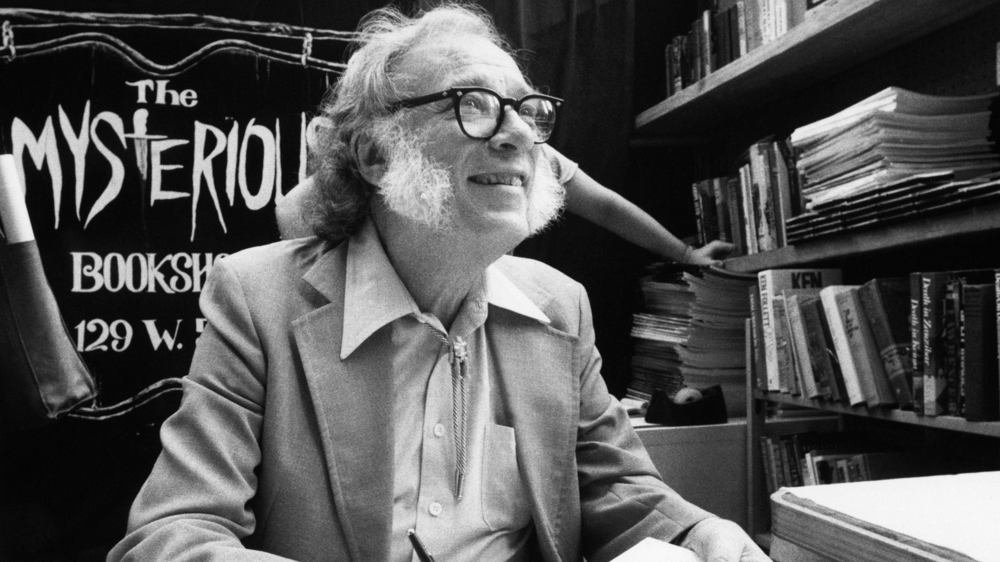
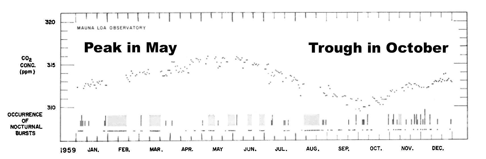
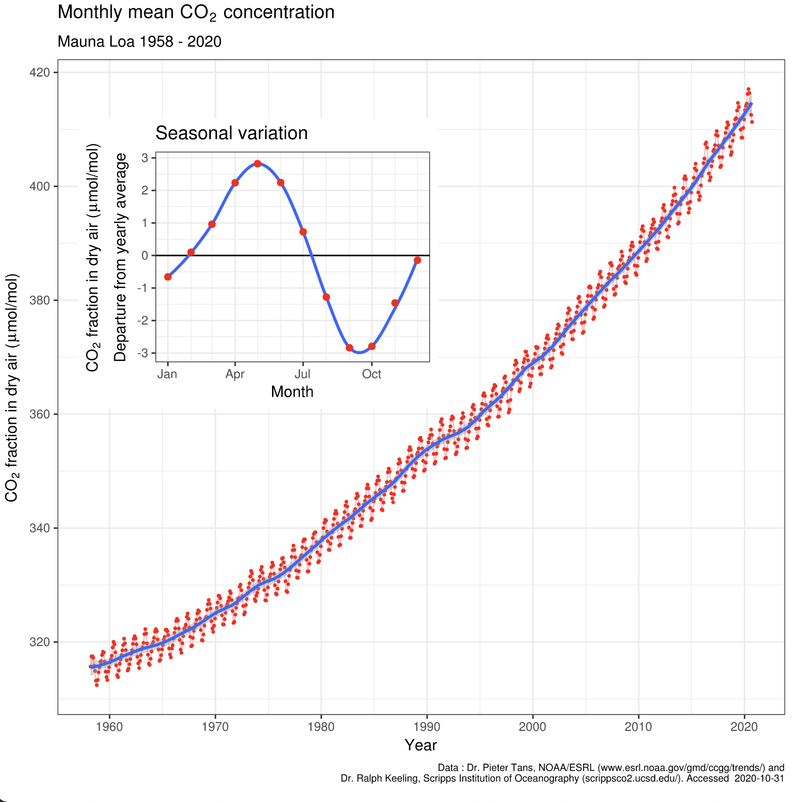
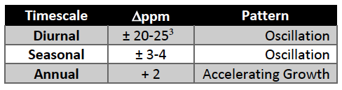

I’m Jonathan Burbaum, and this is Healing Earth with Technology: a weekly, Science-based, subscriber-supported serial. In this serial, I offer a peek behind the headlines of science, focusing (at least in the beginning) on climate change/global warming/decarbonization. I welcome comments, contributions, and discussions, particularly those that follow Deming’s caveat , “In God we trust. All others, bring data.” The subliminal objective is to open the scientific process to a broader audience so that readers can discover their own truth, not based on innuendo or ad hominem attributions but instead based on hard data and critical thought.
You can read Healing for free, and you can reach me directly by replying to this email. If someone forwarded you this email, they’re asking you to sign up. You can do that by clicking here .
Like Science itself, I refer to facts established previously, so I recommend reading past posts in order if this is your first encounter. To catch up to this point will take approximately 44 minutes of your time in 10-minute chunks. [Or, of course, more, if you decide to think.]

“There is a cult of ignorance in the United States, and there always has been. The strain of anti-intellectualism has been a constant thread winding its way through our political and cultural life, nurtured by the false notion that democracy means that 'my ignorance is just as good as your knowledge.'” Isaac Asimov, in “A Cult of Ignorance”, Newsweek, January 21, 1980.
This has never been more true than it is today, and I’m talking about you and me , not the ignoramuses on the other side of whatever was in your custom “news” today. To succeed as a democracy, America needs to learn how to think not to be told what to think. That’s what I’m aiming for with this series.
To that objective, let me lay out a pathway that connects data to knowledge, one that’s served me well throughout my varied career. I describe it by the acronym “DICK”. Data —> Information —> Content —> Knowledge. Data is the raw numbers. It is the coin of the realm, the base on which Science is built. Information is what these numbers tell us at the most basic level. Content is our evolving interpretation of the information, and Knowledge is how Science advances. It involves weaving the content into context, one thread at a time. I hope my previous issues have begun to show how this process works.
" Scientia potentia est " is a Latin aphorism generally translated as “Knowledge is power.” But the translation is, literally, “Science is power,” and the basis of Science is data. Data becomes power (just ask Amazon or Google), but only if it leads to knowledge. Channeling Asimov: Any “conspiracy theory” based on innuendo or pretzel logic is neither as valuable nor as useful as any “scientific theory,” if the scientific theory is based on solid data. But any theory must adapt if contradictory data becomes available. If the data is selected to fit the theory, the result is metastatic foolishness. If the theory is presented as an undisputed fact, the result is blind faith. If new data does not fit older data, all measurements must be scrutinized thoroughly to validate their accuracy. It requires extraordinary proof to invalidate an established scientific theory!
So, let’s get started. Data —> Information —> Content —> Knowledge.
Today’s read: 9 minutes.
The story continues…
To this point, I’ve prompted each newsletter with questions addressed by Science, like “ Is Global Warming Real? ” and “ Carbon. Hero or Villain? ” To illustrate how scientists answer these questions, I have selected key elemental sets of data. While I’ve drawn conclusions and shown the reasoning, I’ve also left open the door for others to offer alternative conclusions, ideally based either on the data I present or other data that I might not be aware of. So far, no one has ventured through that door, but previous newsletters are still out there for comments and criticisms. My mind is not closed, and I’m open to reasoned discussion. This is how “textbook” Science works: Data serves to constrain hypotheses . [Or, perhaps for the CSI crowd, evidence rules out false theories.]
Fortunately, there’s a lot of Science that takes the opposite approach: By “leading with data”, scientists don’t start with any particular hypothesis or theory—it’s way too easy for any human to succumb to confirmation bias if you start with an answer in mind. The ideal way to avoid this pitfall is to be sure of the data and then follow it. Some of the most impactful scientists have an intuitive sense of what data to collect. They record whatever measurements they can make as accurately and consistently as possible and then construct theories about the real world that explain the measurements. They assiduously follow DICK, in order.
Today, I’d like to offer a brief historical look into the most consequential such data collection exercise in climate science, the story of Charles David (“Dave”) Keeling, and the eponymous Keeling curve. The following is a condensed and edited version of a longer (and more chemistry-centered) feature in Analytical Chemistry , written by Daniel C. Harris. 1
The Keeling Curve and its origins
In the early 1950s, Dave Keeling was at Northwestern finishing up his Ph. D. on the chemistry of plastics and had to contemplate getting a “real” job. He was also an avid outdoorsman and was looking for a career path that would allow him to combine his passions for chemistry and the outdoors. So Dave chose an unusual route, elbowing his way into a postdoctoral appointment in geochemistry (the chemistry of Earth’s systems) with Harrison Brown, a new faculty member at Caltech in Pasadena, California. Prof. Brown had worked on the Manhattan Project and was interested in groundwater and mineralization. Brown knew that limestone was present in groundwater and could be measured as carbon dioxide released after treatment with acid. But nobody had been able to measure carbon dioxide with the precision and sensitivity required. Keeling accepted the challenge and designed and built an apparatus that could measure carbon dioxide more precisely than ever before. At the start of the project, he discovered a big problem: Carbon dioxide in the air screwed up his groundwater measurements. A tireless experimental scientist, Dave began to measure carbon dioxide everywhere to find the source of the problem. In Pasadena, he postulated that carbon dioxide might vary due to local circumstances, so he convinced Brown to let him take measurements while camping on the California coast at Big Sur. Later, Keeling wrote, “At the age of 27, the prospect of spending more time at Big Sur State Park to take suites of air and water samples instead of just a few didn’t seem objectionable even if I had to get out of a sleeping bag several times in the night.”
At Big Sur, Keeling measured and measured and measured. The measurements revealed more carbon dioxide at night than during the day. Air on sunny afternoons always contained close to 310 ppm, but at night the concentration was higher, sometimes much higher, and his measurements were inconsistent. Somehow, he convinced Brown to let him escape the lab even further to explore other idyllic and remote camping spots, including the Olympic rain forest, forests in the high desert of Arizona, and even over tropical ocean waters. Now he had a lot of information, but it hadn’t yet progressed down the path toward knowledge. Finally, after more measurement and theorizing, Keeling explained the carbon dioxide patterns as being fully consistent with known facts: Air is more thoroughly mixed during the day because of solar heating (leading to a constant reading) but, at night, the air is stagnant, and carbon dioxide is released through the biological process of respiration (leading to variability).
His timing couldn’t have been better: The International Geophysical Year, a worldwide effort to make geophysical measurements over an 18-month period beginning in July 1957, was about to start. In this context, Keeling’s contributions came to the attention of Harry Wexler, head of the Division of Meteorological Research in the Weather Bureau in D.C. Wexler was already planning atmospheric measurements at several locations, including a new observatory at Mauna Loa in Hawaii. So he invited Keeling to Washington, and Dave presented his results and explanation. Keeling then proposed a new, as yet untested method that could make more frequent measurements. Within an hour, Wexler accepted his proposal, and a job was offered—in D. C.
This wasn’t the fieldwork Dave wanted, so he ultimately turned down the job. But, through another connection, his research was brought to the attention of Roger Revelle. [Revelle was then Director of the Scripps Institution of Oceanography in San Diego, California, and went on to become a founding faculty member of UCSD before moving to Harvard and teaching an elective course on climate to a prominent senior majoring in Government, Albert Gore, Jr.]. Revelle invited Keeling to Scripps and immediately offered him a faculty position with an ocean view. This was irresistible to the chemist-outdoorsman, and Dave quickly accepted. The Weather Bureau ended up agreeing to support Keeling’s work anyway and offered access to the Mauna Loa observatory for his measurements.
Keeling then developed his new, faster method for carbon dioxide measurement and installed his gas analyzer on Mauna Loa in 1958. The intent was to measure carbon dioxide concentrations in the pristine Pacific air with no particular purpose in mind. After a few initial hiccups, measurements every half hour began in 1959 and have continued ever since. [Keeling’s original instruments worked tirelessly for 48 years before being replaced by an improved version.]
So, what is the data?

In addition to confirming the inconsistent day-night variation he observed earlier in Big Sur and elsewhere, now the data reveals an annual cycle of ±2-3 ppm. Keeling reproduced this pattern in other locations, in both hemispheres, so the phenomenon is not particular to Hawaii. Again, he turned to biology for an explanation consistent with the data. Long ago, scientists established that carbon dioxide is absorbed by plant life as it grows through photosynthesis. During the summer, there is more photosynthesis than in the winter because there is substantially more land covered with growing plants when the Northern Hemisphere is tilted toward the sun. Consequently, every year, from May through October, the Earth is a net absorber of carbon dioxide. Later, Keeling wrote that “we were witnessing for the first time nature’s withdrawing CO2 from the air for plant growth during the summer and returning it each succeeding winter.” 2
But, Keeling didn’t stop with that profound, almost spiritual, understanding of Earth’s systems. He kept measuring. He continued to track the data over decades to reveal an even more striking pattern: The carbon dioxide background is rising on top of the annual cycle. This is the full Keeling Curve:

See how the seasonal variation (inset) comes into focus as a reproducible wave, but each December is slightly higher than the previous January. This accounts for the consistent rise in annual carbon dioxide concentration shown by the blue line in the larger graph.
This is the baseline dataset that drives today’s global concerns about climate change. And it all happened because a plastics chemist wanted to find a way to spend as much of his career outdoors as possible and was willing and able to spend it measuring a fundamental property of Earth’s atmosphere.
To summarize Keeling’s career in table form: 3

We will return to these fundamental observations in later newsletters.
Rewards and Penalties of Monitoring the Earth , Charles D. Keeling, Annual Review of Energy and the Environment, 1998, 23:1,25-82
There’s a broad range of amplitudes in diurnal measurements because different microclimates show different changes due to vegetation differences, and some climates (e.g., deserts) have little to no ground cover. Initially, Keeling confirmed earlier reports that CO2 levels have a diurnal cycle even in rural areas, noting that “plants are able to reduce the concentration of carbon dioxide to significantly lower values than have ever been observed under natural conditions.”